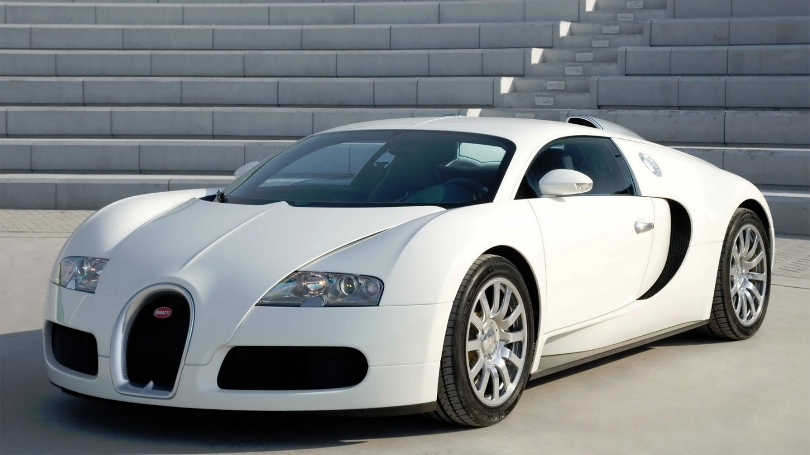

Bugatti Vejron
Гиперкар компании Bugatti, производившийся с 2005 по 2015 год. Назван в честь французского легендарного гонщика Пьера Вейрона, победителя 1939 года в гонках 24 часа Ле-Мана. В 2010 году журналы Top Gear и Robb Report присудили награду «Автомобиль десятилетия» Bugatti Veyron и модификации Grand Sport соответственно. Модификация Super Sport в 2010 году побила мировой рекорд скорости и стала самым быстрым серийным автомобилем в мире. Производство Veyron на данный момент завершено, всего было продано 450 автомобилей: 300 купе и 150 родстеров. Его преемником является Bugatti Chiron, официально представленный на женевском автосалоне в 2016 году.
